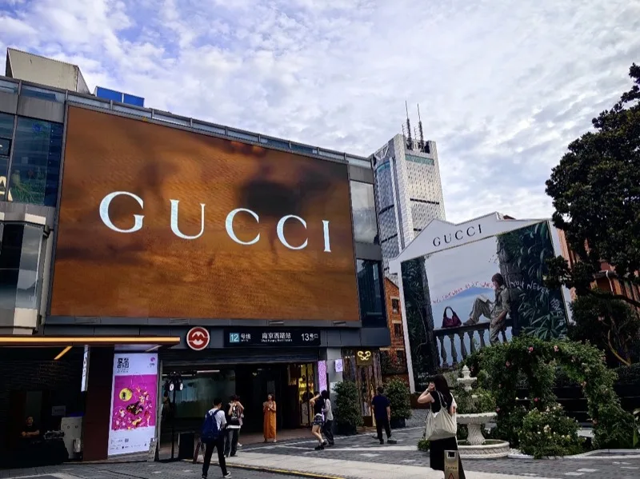
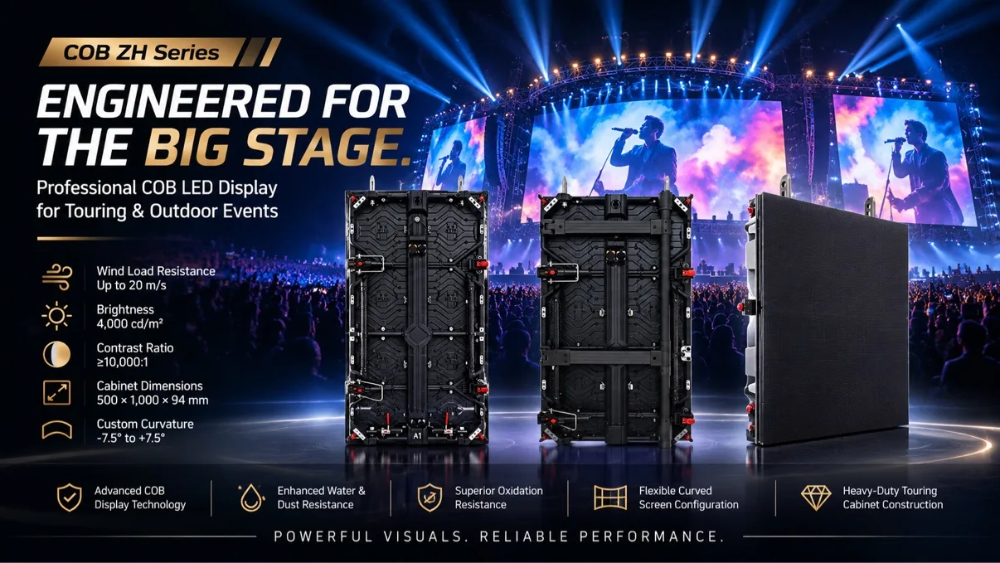

Does common-cathode COB actually lower the power bill? It can, and on a wall that runs 24 hours a day the difference compounds into real money and real heat. But “common cathode” on a datasheet is a design label, not a measured number. For a control room, a transport concourse, a retail window or a broadcast set that never switches off, the useful questions are narrower: which product in the quotation really uses it, what measured power the supplier will commit to under defined conditions, and how that figure goes into the running-cost and cooling calculation.
This guide is about specifying and pricing it. The physics of why splitting the supply rails reduces wasted power is covered in our LED energy saving guide, the general running-cost method in the energy consumption guide, and the full cost stack in the dvLED total cost of ownership guide.
In a common-anode design, the red, green and blue emitters share one supply voltage, so the colour that needs the least voltage (red) drops the surplus as heat. In a common-cathode design each colour can be fed at a voltage closer to what it needs. Less surplus voltage means less heat at the same brightness. COB packaging and the driver IC have to be designed for it; it is not a setting that can be switched on later. A flip-chip COB face and a common-cathode drive are independent choices — our flip-chip vs face-up COB guide explains why one does not imply the other.
The first step in any specification is to stop assuming. Read what each product page actually publishes, and ask for the rest in writing. Across Asia Vision's current product pages:
| Series | Technology | Drive architecture as published | Typical 24/7 use |
|---|---|---|---|
| M-PRO | SMD/GOB indoor, P1.25–P1.87 | Common cathode | Meeting rooms, control centres |
| COB ZH | Flip-chip COB touring, P1.95/P2.6 | Optional common cathode | Touring and outdoor events |
| D-PRO | SMD outdoor fixed, P5–P10 | Common cathode or common anode options | Roadside and facade advertising |
| COB CV-PRO | COB indoor fine pitch, P0.9375–P1.875 | Common anode | Boardrooms, command centres |
| RH-PRO COB | Flagship flip-chip COB, P0.78–P1.56 | Not published — confirm on quotation | Mission-critical 24/7 rooms |
Two lessons come out of that table. First, “COB” and “common cathode” do not travel together automatically: the indoor fine-pitch CV-PRO is published as common anode, while the published common-cathode COB option is on the touring COB ZH. Second, a 24/7 indoor buyer choosing between COB fine pitch and a common-cathode SMD/GOB wall is making a trade-off between surface robustness, pitch and running power, and that trade-off should be priced, not guessed.
Supply-voltage lines on a spec sheet can hint at the design — D-PRO and COB EF both publish DC 3.2/4.2V, while CV-PRO publishes DC 4.2V — but ask the supplier to state the drive architecture of the quoted module rather than inferring it.
Power figures in quotations are often impossible to compare: one supplier gives a maximum, another a “typical” with no conditions, a third a figure per cabinet at an unstated brightness. A specification that fixes the conditions removes that problem.
Insist that every figure states its brightness, content and measurement method. A common-cathode wall measured at your real operating brightness is the only number that belongs in the budget. Asia Vision's product pages do not publish power per m² for these series; those figures are confirmed on the quotation for the exact module and pitch.
Figure 1 shows an outdoor retail billboard, a typical long-hours screen where both the drive architecture and the dimming schedule shape the energy bill.

A 24/7 wall runs 8,760 hours a year. The annual energy is:
annual kWh = average W per m² × wall area in m² × operating hours ÷ 1,000
With hypothetical numbers, only to show the arithmetic: a 20 m² wall averaging 200 W/m² for 8,760 hours uses 35,040 kWh a year. If a different drive design measured 15% lower at the same brightness and content, it would save about 5,256 kWh a year before any cooling effect. Replace every input with quoted, measured figures and your own tariff; do not reuse these example values.
Then add the cooling. Almost all the electrical power a wall uses ends up as heat in the room — about 3,412 BTU/h for every kW — and in a sealed control room or studio, air conditioning has to remove it. A lower-heat design reduces that load as well, which is why the saving is often larger than the screen meter suggests. Our cooling and ventilation guide covers how to size it.
| Cost line | Where common cathode can help | What to check |
|---|---|---|
| Screen electricity | Lower average draw at the same brightness | Measured average W/m² at your brightness |
| Cooling energy | Less heat into the room | Heat load per m², HVAC efficiency |
| Component life | Lower operating temperature | Surface temperature at stated condition |
| Power infrastructure | Smaller maximum load per circuit | Maximum W/m², circuits per run |
| Generator fuel (events) | Lower load on temporary power | Measured power at show brightness |
Control and command rooms combine 24/7 operation with sealed rooms, so cooling dominates. Redundancy may matter more than efficiency: the RH-PRO COB publishes dual power, dual receiving cards and a dual signal path, so ask for its drive architecture and power figures alongside the redundancy configuration.
Broadcast studios run long hours under lighting that already loads the HVAC. Lower screen heat helps the presenter area as much as the bill.
Retail and DOOH screens run long days at high brightness; combine the drive architecture with an automatic dimming schedule, since brightness remains the biggest lever.
Touring and outdoor events often run on generators, where every kilowatt saved reduces fuel and the size of the temporary supply. The COB ZH's optional common cathode is relevant here; size the distro from measured show-brightness figures, and see our COB touring guide for the rest of the rental specification.
Figure 2 shows the COB ZH touring stage platform, where lower power draw also means a smaller generator and distro plan.

Evaluating running cost alongside price changes which bid wins on a 24/7 project. It also stops a lower-priced common-anode offer and a higher-priced common-cathode offer from being compared on purchase price alone.
Asia Vision product pages publish a 3-year warranty and 18-day standard delivery. Drive architecture where not published, power per m² and surface temperature are confirmed on the quotation. Send the operating hours, target brightness and room conditions through our contact form and we will return comparable power figures for the series that fit.
Comparing bids for a wall that never switches off? Send the area, operating hours, target brightness and room conditions. We will reply with comparable power figures and a running-cost view for the series that fit. Start a project enquiry.